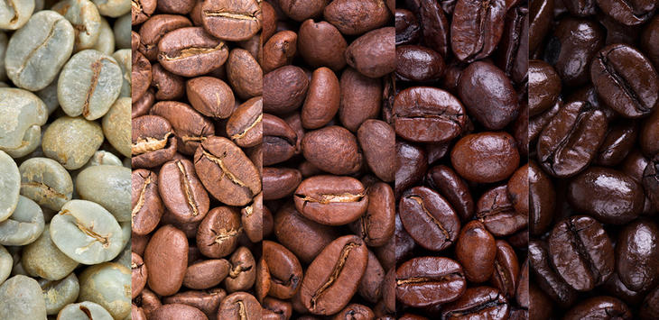

¿Cuantos tipos de tueste existen?
Cada café tostado es único. En el proceso de tueste inciden factores como la humedad, la temperatura ambiente, el tipo de grano, su maduración y el tratamiento que ha recibido. Por eso, un lote de café tostado nunca es exactamente igual a otro.
A pesar de eso, sí se puede diferenciar el café según su nivel de tueste: ligero, medio e intenso. Según el grado de tostado se extraen unos sabores u otros del grano de café.
Nuestros Productos